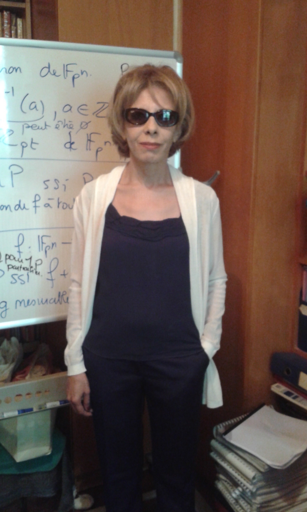

Program
Important Locations
Welcome Event on Dec 7:
Manhari Room (Level 7-7212), Melbourne Connect, Parkville campus, The University of Melbourne.
Map Link
Manhari Room (Level 7-7212), Melbourne Connect, Parkville campus, The University of Melbourne.
Map Link
Conference Venue:
Russell Love Theatre, Peter Hall Building, Parkville campus, The University of Melbourne.
Map Link
Russell Love Theatre, Peter Hall Building, Parkville campus, The University of Melbourne.
Map Link
Banquet on Dec 10:
UNIVERSITY HOUSE (BUILDING 112), Parkville campus, The University of Melbourne.
Map Link
UNIVERSITY HOUSE (BUILDING 112), Parkville campus, The University of Melbourne.
Map Link
Conference Schedule
| Sunday, December 7, 2025 | |
| 18:00 | Evening Welcome Event Location: Manhari Room, Melbourne Connect |
| Monday, December 8, 2025 | |
| 08:30–09:00 | Registration with Coffee & Tea |
| 09:00–09:20 | Opening Remarks |
| 09:20–11:00 |
Session 1: Sequences-I
Session Chair: Yang Yang
|
| 11:00–11:20 | Coffee & Tea |
| 11:20–12:20 |
Keynote Speech 1
Professor Pingzhi FanSouthwest Jiaotong University
Talk Outline: Orthogonal time frequency space (OTFS) is a novel modulation scheme to handle the high Doppler effect under time varying channels. In this paper, in order to improve channel estimation accuracy and to reduce pilot overhead, two types of two-dimensional (2D) pilots and the corresponding matched filters are designed for multi-antenna OTFS systems. Our 2D pilots are formed using perfect arrays (such as Frank array, Chu array, etc) or perfect-sequence based Kronecker array (PKA). Different from the previous multi-antenna OTFS pilots, these 2D pilots are placed on the same area in the delay-Doppler domain, using code division multiplexing to deal with the interference between pilots of different antennas, known as pilot pollution. To improve the channel estimation performance, matched filters are also designed to better compensate the phase shift of the 2D pilot response in the delay-Doppler domain. Compared with the conventional multi-antenna OTFS schemes, the proposed scheme achieves significantly better NMSE performance, while having lower pilot overhead under multi-antenna scenarios. Finally, more recent new pilot arrays are also reported. |
| 12:20–13:50 | Lunch |
| 13:50–15:30 |
Session 2: Decoding, Detection, and DNA Storage
Session Chair: Adrish Banerjee
|
| 15:30–16:00 | Coffee & Tea |
| 16:00–17:40 |
Session 3: Coding Theory: Hulls and Structures
Session Chair: Zhengchun Zhou
|
| Tuesday, December 9, 2025 | |
| 08:30–09:20 | Coffee & Tea |
| 09:20–10:20 |
Keynote Speech 2
Professor Sihem MesnagerUniversity of Paris VIII & Telecom Paris

Algebraic Equations over Finite Fields: Advances in Resolution Techniques and Practical Impacts in Modern Technology
Talk Outline: This talk will discuss the problem of solving algebraic equations over finite fields. This fundamental issue has become increasingly important due to its critical role in various applied domains, particularly information theory and cryptography. Addressing equations over finite fields is essential from both theoretical and practical perspectives. Historically, researchers have focused on determining the number of solutions for certain equations rather than explicitly deriving all possible solutions. While this limited approach has sufficed for some practical applications in cryptographic function theory, we need to enhance our understanding to yield more comprehensive results. Developing tools and performing methods to solve an extensive range of equations over finite fields is crucial, as it provides valuable resources for theorists, cryptographers, and coding theorists. We will begin by outlining our primary motivations for this work. Next, we will present significant recent achievements in solving key algebraic equations over finite fields and discuss the methodologies and key mathematical ingredients of these developments. |
| 10:20–10:40 | Coffee & Tea |
| 11:00–19:00 | Tour (Half-day excursion) Departure Location: the Conference Venue |
| Wednesday, December 10, 2025 | |
| 08:30–09:20 | Coffee & Tea |
| 09:20–11:00 |
Session 4: Security and Communication Protocols (Learning-Based)
Session Chair: Hong-Yeop Song
|
| 11:00–11:20 | Coffee & Tea |
| 11:20–12:20 |
Keynote Speech 3
Professor Stephen BartlettUniversity of Sydney
Talk Outline: The incredible potential of quantum computing has been recognised by innovative companies in all sectors—quantum computers will perform calculations that are impossible for conventional computation. But in practice, building a quantum computer and harnessing its power is daunting, given the challenges faced by these complex machines in retaining their quantum nature as they scale up in size. While the technology for quantum computing components has matured significantly in recent years, integrating these components to achieve utility-scale quantum computers will require quantum error correction to tolerate the high error rates of today's quantum devices. In this talk, I'll provide an overview of the recent developments in fault-tolerant architectures for quantum computing, including the use of new types of quantum codes based on low-density parity check (LDPC) codes, and why I believe these developments will enable large-scale quantum computing before the end of this decade. |
| 12:20–13:50 | Lunch |
| 13:50–15:30 |
Session 5: Security and Cryptography
Session Chair: Sedar Boztas
|
| 15:30–16:00 | Coffee & Tea |
| 16:00–16:30 |
Invited Talk
Dr.Farhad FarokhiThe University of Melbourne
Maximal Quantum Information Leakage: Application to Privacy and Inference
Talk Outline: An alternative measure of information leakage for quantum encoding of classical data is defined. An adversary can access a single copy of the state of a quantum system that encodes some classical data and is interested in correctly guessing a general randomized or deterministic function of the data (e.g., a specific feature or attribute of the data in quantum machine learning) that is unknown to the security analyst. The resulting measure of information leakage, referred to as maximal quantum leakage, is the multiplicative increase of the probability of correctly guessing any function of the classical data upon observing measurements of the quantum state. Maximal quantum leakage satisfies various axioms for information leakage and can be used to study various important problems in quantum computing and communication relating to security, privacy, and statistical inference. |
| 18:30 | Conference Banquet Location: University House |
| Thursday, December 11, 2025 | |
| 08:30-09:20 | Coffee & Tea |
| 09:20-10:20 |
Session 6: Next-Gen Wireless Systems and Estimation
Session Chair: Chi-chao Chao
|
| 10:20–10:40 | Coffee & Tea |
| 10:40–12:20 |
Session 7: Sequences-II
Session Chair: Tetsuya Kojima
|
| 12:20–13:50 | Lunch |
| 13:50–15:30 |
Session 8: Sequences, Source Coding, and Applications
Session Chair: Avik Ranjan Adhikary
|
| 15:30–16:00 | Coffee & Tea |